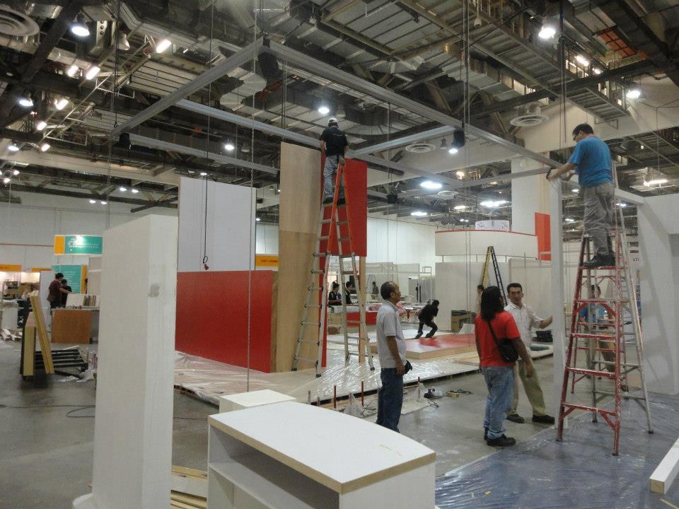

Kingsmen Creatives designs and builds the places where brands meet people — museum galleries, theme-park attractions, interactive flagship stores and live brand events. A design-and-build contractor for the experience economy: the client buys a finished, fitted-out space, and Kingsmen carries the creative work, fabrication, logistics and installation risk needed to deliver it.
By Jiarun Yang, 2026Beyond Our Gallery
Research score
Kingsmen Creatives scores 59.3 out of 100 — Satisfactory
This scores the underlying business quality and future potential, not the share valuation. It uses FY2021–FY2025 audited results and incorporates the latest 1H2026 disclosures.
59.3out of 100Satisfactory
Financial Strength 24.3 / 40
Market Position 10.8 / 20
Growth Opportunities 15.2 / 25
Risk Resilience 9.0 / 15
Evidence grade B
Sensitivity range 56–63
Central score 59.3
Figure 00.1 · The ScoreIs Kingsmen ahead of a reasonable sector benchmark?Company-versus-sector benchmark dot plot. The dots show Kingsmen against an editorial benchmark for experience-economy contractors.
LiftsNet cash, positive free cash flow and credible project references.
Holds backThin margins, low market share and limited proof of recurring client economics.
Source: Beyond Our Gallery scoring model, FY2021-FY2025 annual reports and latest 1H2026 disclosure. Updated September 2026.
The latest half-year is encouraging but mixed
1H2026 revenue increased 3.9%, attributable profit increased 49.9%, and secured contracts reached S$392m. However, gross margin declined to 23.3% and operating cash flow was negative S$12.5m because of working-capital absorption. The five-year score is therefore left unchanged until full-year results establish whether the improvement is durable.
A founder-controlled small-cap with 18 offices and four operating segments
A founder-controlled Singapore small-cap, fifty years old, running design-and-build out of 18 offices — and earning a 3.7% net margin on S$372.5m of revenue. Almost all of that revenue is Asian and two-fifths is Singapore. The balance sheet is the standout: S$79.3m of net cash against a market capitalisation of roughly S$109m.
S$372.5mFY2025 revenue
3.7%Net margin
S$79.3mNet cash
18Offices worldwide
Read the full analysisCollapse this section
S$372.5m
FY2025 revenue
Contract-based revenue across exhibitions, attractions, interiors and experiential marketing.
S$13.7m
Attributable profit
Net margin reached 3.7% — the strongest of the past five years.
S$79.3m
Net cash
Unpledged cash less bank and term loans; leases excluded.
93.7%
Revenue from Asia
South and North Asia dominate; Singapore alone is 42.3% of group revenue.
Founded
1976
Started in Singapore by Benedict Soh and Simon Ong. Both still sit on the board and between them hold close to half the shares — this is still a founder-controlled company.
Listed
SGX: 5MZ
On the SGX Mainboard since September 2003 at an IPO price of 19.8¢. A small-cap: closely held, thinly traded and lightly covered by analysts.
What it sells
Design → Build
Four operating segments: Exhibitions, Thematic & Attractions; Retail & Corporate Interiors; Research & Design; and Experiential Marketing.
Where it works
18 offices
A global network of offices and full-service production facilities across Asia, the Middle East, Europe and North America.
How the opportunity becomes value
1 · OPPORTUNITY
Macro demand
Tourism, luxury investment, destination capex and corporate confidence determine how many projects enter the market.
2 · CAPTURE
Brand fit & trust
Creative compatibility, references and consistent regional execution influence whether Kingsmen wins the brief — and whether the client returns.
3 · RECOGNITION
Project timing
Awards become design work, fabrication, installation and milestone revenue over months or years. Annual revenue therefore lags the demand signal.
4 · VALUE
Margin & cash
Mix, change orders, procurement, working capital and repeat work determine whether revenue becomes profit, free cash flow and shareholder value.
02 Segments
Two execution-heavy divisions generate 92% of revenue; the smaller design arm has the highest margin
Two execution-heavy divisions produce 92% of revenue at 3.5–5.6% margins, while the design arm turns 5.4% of sales into the group's best margin — roughly 2.5× more profit per revenue dollar. Experiential Marketing swung to a loss. Scaling design-led work is the cheapest available route to a higher group margin.
92%From the two build divisions
8.6%Research & Design
3.5%Exhibitions & attractions
−S$0.3mExperiential Marketing PBT
Read the full analysisCollapse this section
Figure 02.1 · The EvidenceWhich segment converts revenue into profit most efficiently?Revenue-versus-margin bubble chart. Bubble area represents segment profit or loss.
This division undertakes large, often one-off projects for governments, tourism operators, entertainment companies and major brands — exhibition booths, museums, theme-park environments, visitor attractions and major pavilions.
INCLUDING:
Client: RWSSegment: ETAWhy: destination capex
Singapore Oceanarium
Geography: OsakaSegment: ETAWhy: civic prestige
Singapore Pavilion, Expo 2025 Osaka
FY2025 revenueS$172.4m
Retail & Corporate Interiors
Share45.7%
Segment profitS$9.6m
Segment margin5.6%
YoY revenue−0.6%
A specialised design-and-build contractor for branded commercial spaces. Kingsmen works with retail and corporate clients to translate a brand's identity into a physical environment — stores, offices, showrooms and flagship locations.
Kingsmen's higher-level creative capability, housed principally under KR+D. It researches audiences and develops the narrative, layout and visitor journey behind a space — consumer research, storytelling, spatial and experience design.
INCLUDING:
Client: DHLSegment: R&DWhy: concept-led brief
DHL Americas Innovation Center
Geography: SGSegment: R&DWhy: storytelling moat
The Bicentennial Experience
FY2025 revenueS$20.0m
Experiential Marketing
Share2.7%
Segment profit−S$0.3m
Segment margin−3.2%
YoY revenue−9.0%
Temporary brand experiences, including product launches, pop-up installations, luxury-brand events, gala dinners, roadshows, and interactive marketing campaigns.
ETA and RCI supply 92% of revenue at just 3.5% and 5.6% margins, so profit swings with project timing, tender pricing and site execution. Winning bigger jobs adds turnover, and one slipped handover can move group earnings.
Value density
R&D is strategically scarce
At an 8.6% margin, R&D earns roughly 2.5× more profit per revenue dollar than ETA, yet it is only 5.4% of sales and grew 5.0%. Scaling design-led work — or attaching it to more build contracts — is the cheapest route to a higher group margin.
Portfolio issue
Marketing lost money
Experiential Marketing swung to a −S$0.3m loss on 2.7% of revenue, with sales down 9.0%. The drag on group PBT is small, but a sub-scale unit still absorbs management time — the question is whether to reprice it, fold it into ETA, or exit.
The integrated value chain — and where the margin actually sits
Kingsmen's competitive advantage is integrating creative origination with physical delivery and live operation. Integration reduces coordination risk for clients — but the current revenue mix remains concentrated in the middle of the chain, where project competition and input costs are strongest.
01
Research & strategy
Audience insight, brand interpretation, visitor journey and commercial objectives.
Higher-value fees
02
Creative & design
Concept development, storytelling, spatial design, engineering and specification.
Differentiation
03
Fabricate & install
Procurement, production, fit-out, logistics, site management and delivery.
Revenue scale
04
Activate & operate
Events, ticketed experiences, maintenance, programming and audience measurement.
Design and completed-experience imagery: Kingsmen Creatives. Fabrication: MER Services; on-site build: ITB Berlin; installation: Smithsonian Exhibits. Industry process photographs illustrate comparable work and are not presented as Kingsmen projects.
03 Five-Year Financials
Revenue recovered after the pandemic — but gross-margin expansion explains the stronger earnings base
Revenue fell 4.1% in FY2025 yet gross profit reached a five-year high — margin, not volume, is what moves earnings here. One point of gross margin is worth about S$3.7m, roughly four times a point of revenue at 5.5× operating leverage. Strip out FY2024's S$5.3m property gain and underlying profit improved about 75%.
8.1%Five-year revenue CAGR
24.7%FY2025 gross margin
5.5×PBT operating leverage
S$27.5mFree cash flow
Read the full analysisCollapse this section
8.1%
Revenue CAGR
FY2021–FY2025: S$273.2m → S$372.5m.
11.8%
Gross-profit CAGR
Gross profit grew faster than revenue as gross margin expanded 3.1 points.
5.5×
PBT operating leverage
At the FY2025 cost structure, a 1% revenue change produces roughly a 5.5% PBT change.
Figure 03.1 · The EvidenceWhat changed beneath the revenue line?Revenue bars with gross-margin line. Labels mark the recovery phase and FY2025 margin high.
Source: Kingsmen Creatives annual reports, FY2021-FY2025. Updated September 2026.
Figure 03.2 · Supporting EvidenceHow far did the margin base reset?% of revenue
FY
Revenue
Gross profit
Gross margin
PBT
Net profit
Net margin
EPS
DPS
2021
273.2
58.9
21.6%
1.0
1.0
0.4%
0.50¢
—
2022
328.4
70.3
21.4%
5.7
4.6
1.4%
2.30¢
1.00¢
2023
361.5
78.2
21.6%
3.1
2.9
0.8%
1.41¢
1.00¢
2024
388.4
90.4
23.3%
16.0
13.1
3.4%
6.51¢
2.00¢
2025
372.5
92.2
24.7%
16.8
13.7
3.7%
6.78¢
3.00¢

The operating reality behind the marginPhysical delivery ties revenue to labour, materials, sequencing and site access. Small execution gains therefore matter disproportionately to profit.
Illustrative on-site process photography: ITB Berlin.
FY2025 profit was economically stronger than the headline +4.2% suggests
Headline comparisons are distorted by a S$5.3m property-disposal gain booked in FY2024. Strip it out and the underlying improvement is ≈75%.
S$13.1m
FY2024 attributable profit
As reported.
−S$5.3m
Less: disposal gain
One-off property-disposal gain.
≈S$7.8m
FY2024 ex-gain
The true comparison base.
S$13.7m
FY2025 attributable profit
≈75% above the ex-gain base
Not a fully normalised earnings calculation: it removes only the disclosed disposal gain and leaves all other year-specific project effects intact.
Segment profit — FY2024 reported vs FY2024 adjusted vs FY2025S$ million · FY2024 adjusted removes the S$5.3m property-disposal gain from RCI
FY2024 reportedFY2024 adjustedFY2025
+S$4.7m
ETA profit improvement
Revenue fell S$14.8m as 2024's big completions ended and new work was scheduled later. The gain is mainly margin, 0.9% → 3.5%: low-margin completion work rolled off and the group booked higher margins on certain events and projects.
+S$1.8m
RCI adjusted improvement
Reported RCI profit looks like it fell, S$13.2m → S$9.6m, but S$5.3m of FY2024 was a one-off property-disposal gain, so the true base was S$7.8m. Revenue was flat at −0.6%, so the S$1.8m is pure execution, with margin 4.6% → 5.6%.
−S$0.9m
Experiential swing
Revenue fell ~S$1.0m and profit fell S$0.9m: roughly 90% of lost sales dropped straight to the bottom line. At S$10m of revenue, the creative and production base is largely fixed and too small to flex with a 9% decline.
Exceptional FY2025 free cash flow, partly a working-capital release
Operating vs free cash flow, FY2021–25S$ million
Operating cash flowFree cash flow
S$27.5m
FY2025 free cash flow
Approximately 2.0× attributable net profit.
≈S$11.9m
Net working-capital release
Contract assets fell sharply, partly offset by higher receivables and lower contract liabilities.
S$6.0m
Capital expenditure
Higher than the early recovery years but below operating cash generation.
04 Order Book & Outlook
Three years of reported revenue imply a remarkably stable S$236.5m "in-year conversion" component
Kingsmen opens each year with only 34–42% of revenue secured, but the unsecured remainder has landed within S$0.1m of S$236.5m three years running — which turns a speculative-looking book into a planning number. The S$80.8m Resorts World Sentosa award, booked after year-end, is worth 54% of the opening order book.
S$151mSecured at 31 Jan 2026
34%Coverage of FY2026
S$236.5mIn-year conversion
S$80.8mRWS award
Read the full analysisCollapse this section
Kingsmen enters each year with only 34–42% of prior-year revenue secured. But the unsecured remainder — in-year conversion — landed at S$236.5m, S$236.4m and S$236.5m across FY2023–25, a spread of S$0.1m. That turns a speculative-looking book into a planning number, and lets Kingsmen hold delivery capacity through a thin January instead of cutting and rehiring, protecting the execution margin.
Figure 04.1 · The DecisionHow does secured work become recognised revenue?Secured revenue to in-year conversion to total revenue bridge, S$ million.
Source: Kingsmen Creatives order book and revenue disclosures, FY2023-FY2026. Updated September 2026.
At 31 January
Secured contracts
Expected in that FY
Coverage of prior-year revenue
2023
S$133m
S$125m
38%
2024
S$171m
S$152m
42%
2025
S$192m
S$136m
35%
2026
S$151m
S$127m
34%
Singapore Oceanarium · Evolution & Extinction zone · official artist’s impression, not a completed project · Credit: Resorts World Sentosa.
New award · outside the 31 January 2026 order book
S$80.8m
Resorts World Sentosa thematic attraction
Scope
Design-and-build award to Kingsmen Exhibits, announced 22 April 2026.
Recognition
Expected across FY2026–FY2029.
Scenario input
FY2026 assumes S$12.0m in bear/base and S$17.5m in bull.
Scale
Approximately 54% of the S$151m secured book reported at 31 January 2026.
The specific attraction covered by Kingsmen’s contract has not been publicly identified. This official RWS rendering is shown as representative context only. Sources: Kingsmen contract announcement · RWS concept release.
Illustrative FY2026 revenue scenarios
Figure 04.2 · Outlook ModelWhat does each FY2026 scenario do to revenue, earnings and score?Use the selector to update the modelled outcome. This is illustrative, not guidance.
Source: Beyond Our Gallery scenario model using disclosed opening expected recognition and RWS contract timing. Updated September 2026.
Illustrative FY2026 model
Bear
Base
Bull
Opening expected recognition
127.0
127.0
127.0
Other conversion / short-cycle work
213.0
225.0
236.5
RWS recognition assumed
12.0
12.0
17.5
Modelled revenue
S$352.0m
S$364.0m
S$381.0m
Growth vs FY2025
−5.5%
−2.3%
+2.3%
Scenario discipline
1 · Start with the S$127m already expected for FY2026. 2 · Estimate post-January and short-cycle conversion below or near the historical S$236.5m residual. 3 · Add RWS cautiously — some recognition may substitute for ordinary conversion capacity.
05 Market Position & Valuation
A ~2.2% participant in a fragmented US$16.5bn pool — priced just under its closest peer
About 2.2% of a fragmented US$16.5bn market, priced at roughly 8.0× earnings — almost identical to Pico Far East, which earns a 6.0% net margin against Kingsmen's 3.7%. The discount reflects that profitability gap rather than hidden upside; Pico's edge sits upstream, in data and measurement.
~S$109mMarket cap
~8.0×Price / earnings
~1.4×EV / EBITDA
5.6%Dividend yield
Read the full analysisCollapse this section
Kingsmen participates in a competitive market: group revenue is a small fraction of the ~US$16.5bn global exhibition-services pool. The market is fragmented; no participant is a price setter.
S$0.54
Share price
SGX: 5MZ; market data is date-sensitive.
S$109m
Market cap
Approximately 201.9m issued shares.
≈8.0×
P/E
Market cap ÷ FY2025 attributable profit.
≈0.85×
P/B
Market cap ÷ attributable equity.
5.6%
Dividend yield
3.0¢ FY2025 dividend ÷ S$0.54.
≈S$29.7m
Enterprise value
After subtracting analytical net cash.
≈1.4×
EV / EBITDA
The enterprise-value lens on a cash-heavy balance sheet.
≈2.2%
Global market share
Of the ~US$16.5bn exhibition-services pool.
Why the discount can persist
Revenue and earnings are project-dependent · net margin is still thin at 3.7% · recurring-revenue and repeat-client metrics are not disclosed · small-cap liquidity is limited · cash may be required as an operating buffer.
Peer benchmark: Pico Far East (SEHK: 752)
Figure 05.1 · Valuation EvidenceIs Kingsmen cheap, or just less profitable?Peer scatter plot: price/earnings multiple against net margin. A higher-right position indicates richer valuation with stronger profitability.
Source: Kingsmen Creatives FY2025 annual report; Pico Far East FY2025 annual report; market multiples are approximate and date-sensitive.
FY2025
Kingsmen
Pico Far East
Revenue
S$372.5m
HK$7.21bn ≈ S$1.2bn (≈3.2×)
Gross margin
24.7%
30.9%
Net margin
3.7%
6.0%
P/E
≈8.0×
≈8.7×
Kingsmen's P/E sits just under Pico's — but Pico earns a 6.0% net margin against Kingsmen's 3.7%, so the gap reflects profitability, not a hidden discount. Pico also positions around CRM, audience data, digital engagement, AI and measurable outcomes — capabilities that attach higher-value revenue to physical delivery. Strategic implication: as Kingsmen loses on scale, its strategy should shift toward differentiation rooted in novel art forms and an artistic style that acts as "market power" unique to this industry — and toward a comparable story on measurement, repeat relationships and technology-enabled value.
Competitor positioning by capability
Kingsmen's defensible position is the combination of Asian execution depth and end-to-end physical delivery. Its exposed flank is upstream strategy, data and measurable commercial outcomes.
Capability
Kingsmen
Pico
Uniplan
NEON
GPJ / Jack Morton
Sunray
Defensible combination
Asian execution depth + end-to-end accountability. This vertical integration has yet to be assumed by its competitors.
Exposed flank
Strategy, data and measurable commercial outcomes — precisely where Pico, NEON and GPJ position hardest.
06 Demand Economics
One company, three different demand logics
One company, three demand logics — attractions, luxury retail and exhibitions — each with its own trigger and a 12–36 month lag between end demand and recognised revenue. FY2025 showed it plainly: Singapore arrivals rose 2.3% while attractions revenue fell 7.9%. Positional-goods economics then explain why design earns 8.6% and build earns 3.5%.
3Separate demand systems
12–36 mthsLag from demand to revenue
−7.9%ETA revenue in FY2025
S$232.5kSwitching cost, S$5m fit-out
Read the full analysisCollapse this section
One GDP beta cannot explain Kingsmen. Revenue follows three systems — corporate budgets, prestige-led retail and civic commissions — each with a different trigger and lag.
Attractions & museumsTourism and destination investmentLuxury flagship retailLuxury and retail capital expenditureExhibitions & live eventsMICE and corporate marketing expenditure
Project imagery: Kingsmen Creatives. The strip links each physical format to the budget pool that funds it.
B2B derived demand
Budgets, not consumers
Revenue depends on clients' annual capex and marketing decisions. Demand is approved, tendered and built — never sold directly.
Luxury-adjacent
Prestige-led retail
RCI is 45.7% of revenue. Its clients spend around brand positioning and network strategy, not weekly retail volumes.
Cultural and civic
Policy-led commissions
Museums, pavilions and attractions follow policy, prestige and anniversary calendars — sometimes counter-cyclical to private capex.
Derived demand amplifies economic shifts
Consumer demand reaches Kingsmen only after three commercial decisions — which magnifies shocks and delays their arrival in reported revenue.
Figure 06.1 · Demand PathHow long does a demand signal take to become revenue?Demand trigger to tender to delivery to recognition timeline. Time bands are indicative.
Source: Beyond Our Gallery demand framework based on percentage-of-completion project economics and public Kingsmen disclosures.
END DEMAND
Wealth, tourism and brand confidence. Singapore arrivals reached 16.9m in 2025, with S$2.3bn of MICE receipts.
CAPEX DECISION
A client chooses to build, refurbish or stage something through a discrete annual budget.
TENDER & AWARD
The brief becomes a competitive bid and contract. This is where price is set.
RECOGNITION
Revenue reaches the P&L over 12–36 months through percentage of completion.
Amplifier
Why the swing exceeds the shock
A stable retail network can halt new builds without closing a shop. A modest demand move can therefore create a much larger order-book swing: the accelerator effect.
FY2025 proof
The end market grew; revenue fell
Arrivals rose 2.3%, yet ETA revenue fell 7.9% and group revenue fell 4.1%. Revenue tracks past awards, not present conditions.
What Kingsmen builds is a positional good for its client
The Veblen mechanism
Visible expense signals status
A flagship, national pavilion or attraction creates value partly because it looks costly and difficult to reproduce.
Budgets follow positioning
Design captures the premium
Underspending defeats the brief. That helps explain why R&D earns 8.6% while build earns 3.5–5.6%.
Budget cuts both ways
Prestige is still discretionary
When confidence falls, flagship projects are deferred early. Positional demand is valuable, but not defensive.
The capture problem
Kingsmen is closest to the premium in Research & Design — 5.4% of revenue at an 8.6% margin — and furthest from it in fabrication and fit-out, 92% of revenue at 3.5–5.6%. Moving upstream is where the Veblen rent sits.
How economic shocks reach each division
Four end markets transmit through different divisions and on different clocks.
Economic variable
Primary transmission channel
Most exposed divisions
Likely lag
Kingsmen consequence
GDP / business confidence
Corporate capex and marketing budgets
All; especially RCI, Experiential
0–2 yrs
More awards in expansions; postponements in downturns
Exceeds the S$200,000 price saving. Remaining with the incumbent is economically rational — even before reputational damage or executive attention.
How the moat compounds
Creative memory becomes relational capital
Each project teaches Kingsmen the client's materials, approval rules, brand codes, regional adaptations and decision-makers — making the next project faster and less risky.
07 Strategic Frameworks
Porter's Five Forces: squeezed from both sides at once
Porter's Five Forces and PESTLE converge on one diagnosis: high buyer and supplier power squeeze the midstream 92% of revenue, while genuine differentiation sits upstream where only 5.4% does. Kingsmen is a price-taker where the volume is and a price-influencer where the margin is — which is why every strategic option is an attempt to move revenue upstream.
HIGHBuyer power
HIGHCompetitive rivalry
92%Revenue in the squeezed middle
8.6% vs 3.5%Upstream vs midstream margin
Read the full analysisCollapse this section
Figure 07.1 · Moat ProfileWhere is Kingsmen protected, and where is it exposed?Moat-profile heatmap. Higher intensity indicates stronger protection or pressure.
Source: Beyond Our Gallery strategic framework synthesis from FY2025 segment economics, peer positioning and disclosure review.
Force
Intensity
Evidence in Kingsmen's numbers
Competitive rivalry
HIGH
A fragmented, tender-based market. Kingsmen is roughly 1.5–2% of the global exhibition-services pool and about a third the size of Pico Far East. Price is reset bid by bid.
Buyer power
HIGH
Buyers are large and sophisticated — luxury groups, Genting, STB, government agencies — and procure by competitive tender on fixed-price terms that leave overruns with Kingsmen.
Supplier power
MODERATE
Labour, materials, freight and subcontractors. Input inflation hits immediately, and FY2025 carried a net S$1.5m FX loss on cross-border procurement.
Threat of new entrants
LOW–MODERATE
Basic fit-out has low capital barriers. Marquee work does not: an S$80.8m RWS award requires track record, bonding capacity and a delivery network across 20-plus cities.
Threat of substitutes
RISING
Virtual and hybrid experiences, and brands taking design in-house. Partly offset by the shift back to physical experience: luxury goods stabilised in 2025 while experiences outperformed.
The five forces explain exactly where the margin is
8.6%
Upstream · Research & Design
Differentiation, reputation and switching costs all bite here. Buyer power is weaker because the alternative is not another bidder — it is a worse idea. But this is only 5.4% of revenue.
3.5% / 5.6%
Midstream · ETA and RCI
Where rivalry and buyer power are both high, on 92% of revenue. Fixed-price tenders, many capable bidders, clients who can and do compare. Price is taken here, not made.
n/d
Downstream · Operate
Events, maintenance, programming, audience measurement. Recurring by nature and stickier — but not reported separately, so the economics remain unproven.
Verdict
Kingsmen is a price-taker where 92% of its revenue sits and a price-influencer where 5.4% does. Every strategic option on the table — scaling R&D, attaching design to build contracts, monetising operations — is an attempt to move revenue out of the middle of its own value chain. The margin data reached the same conclusion independently.
PESTLE: the six forces acting on Kingsmen
The top row decides whether demand exists at all. The bottom row decides what it costs to serve — and who gets to bill for it.
Political
Much marquee work is state-commissioned or state-enabled: the Singapore Pavilion at Expo 2025 Osaka, the Singapore Oceanarium. Tourism policies are direct demand instruments. Operating across 20-plus cities also carries geopolitical and market-access exposure.
Economic
GDP and business confidence set capex and marketing budgets with a 0–2 year lag. Interest rates move developer and attraction hurdle rates at 1–3 years. Input inflation hits immediately, and FY2025 booked a net S$1.5m FX loss as the SGD appreciated.
Social
The experience economy is the single most favourable trend. In 2025, consumers prioritised travel, hospitality and experiences — pushing brands to sell retail space as a destination rather than just a shelf. Demand for precisely what Kingsmen does.
Technological
Projection, interactive and AR content, digital twins and visitor analytics raise the value of the design layer. The same technologies are also the substitution threat: the virtual experience. Kingsmen names interactive content and visitor analytics as future value pools.
Legal
Fixed-price contracting decides who absorbs an overrun — currently, Kingsmen. Licensed-IP attractions such as The Rings of Power and NERF carry royalty obligations, and government work adds procurement and bonding requirements.
Environmental
Sustainability measurement is on Kingsmen's own list of future value pools. Client ESG reporting is creating demand for modular, reusable exhibition systems and embodied-carbon accounting — the rare area where regulation creates a billable service.
08 Risk & Sensitivity
Risk register: where the economics can break
Six material risks, all pointed at the margin expansion FY2025's result rests on. Operating leverage cuts both ways: a 5% revenue fall takes PBT from S$16.8m to S$12.2m, and a 3% input-cost shock is worth S$8.4m — about half of PBT — if none of it passes through to clients.
6Risks in the register
S$12.2mPBT if revenue falls 5%
S$8.4mCost of a 3% input shock
S$3.73mValue of 1% price retention
Read the full analysisCollapse this section
Figure 08.1 · Risk DecisionWhich risk can damage the economics fastest?Likelihood-impact matrix. Select a risk to reveal its trigger and mitigation.
Source: Beyond Our Gallery risk register and sensitivity model. Updated September 2026.
A 1% revenue change produces roughly a 5.5% PBT change.
Input inflation
A 3% cost-of-sales shock equals S$8.4m
With no pass-through, the shock equals about 50% of FY2025 PBT.
50% pass-through → ≈25% PBT impact 70% pass-through → ≈15% PBT impact 100% pass-through → no direct impact
Contract escalation clauses and procurement timing matter.
Pricing and mix
Small premiums have outsized value
1% price retention across group revenue = S$3.73m, up to 22% of PBT.
+2 points of gross margin = S$7.45m gross profit, up to 44% of PBT.
These are upper bounds: win rates, scope and cost-to-serve may change.
Sustainability and cyber resilience
594.1 t
Scope 1 + 2 emissions
Down 3.1% YoY, but intensity rose 1.1% to 1.59 tCO₂e per S$m.
72.0 t
Waste generated
Down 4.9%; only 1.4 tonnes recycled — a low reported recycling share.
Silver
EcoVadis rating
Supported by ISO 14001 and ISO 20121 management systems.
May 2025
Ransomware incident
No significant operational or financial impact reported; controls subsequently strengthened.
Bid access
Certifications can be a prerequisite or differentiator for public, MICE and multinational work.
Client services
Carbon-assessment and sustainable-event capabilities can become billable services rather than overhead.
Data limitation
Scope 1 and 2 cover Singapore operations; Scope 3 and full project-material impacts are not yet quantified.
Cyber trust
MFA, SIEM, segmentation and training reduce risk where client plans, IP and operational systems are sensitive.
09 Proposed Strategy
Four moves to shift revenue out of the middle of the value chain
Four moves to shift revenue out of the commoditised middle: hold the 24–25% gross-margin base, sell measurement alongside the build, grow the design arm, and prove the repeat-client economics. Margin discipline alone is worth up to 44% of FY2025 PBT.
S$7.45mFrom +2 gross-margin points
+S$9.8mIf R&D reaches 8% of sales
~S$1.86mFrom attaching measurement
44%Potential PBT upside
Read the full analysisCollapse this section
Figure 09.1 · Strategic RoadmapWhich action must happen before the next?Gated roadmap. Each step only compounds if the previous gate is working.
Gate 01
Protect margin
Defend bid discipline and change-order recovery before chasing volume.
Exit proof: gross margin holds near 24-25%.Gate 02
Attach measurement
Add visitor, CRM, carbon and post-event reporting to major builds.
Exit proof: services become separately tracked revenue.Gate 03
Scale design
Use R&D as the wedge into higher-value briefs and execution pull-through.
Exit proof: R&D share moves toward 8% of sales.Gate 04
Prove repeat economics
Disclose repeat-client revenue, retention and margin by relationship age.
Exit proof: reputation turns into measurable pricing power.
Source: Beyond Our Gallery strategy synthesis from segment economics, risk sensitivities and valuation gap analysis.
01
Margin discipline
Defend the 24–25% gross-margin base
Prioritise bid/no-bid discipline, change-order recovery, procurement timing and segment-level post-mortems.
Illustrative value: +2 points of gross margin = S$7.45m gross profit — up to 44% of FY2025 PBT.
Expected impactHigh · up to S$7.45m gross profitImplementation difficultyMedium
02
Data attachment
Sell measurement with the build
Attach visitor analytics, CRM, carbon and post-event reporting to major projects.
Illustrative value: a 2% fee on 25% of revenue = S$1.86m revenue; at 50% gross margin ≈ S$0.93m gross profit.
Track repeat-client revenue, existing-client win rate, cross-division penetration, margin by tenure and renewal.
Economic objective: turn tacit aesthetic trust into observable pricing power and lower acquisition cost.
Expected impactStrategic · pricing power and lower acquisition costImplementation difficultyMedium
Strategic conclusionKingsmen ultimately sells the moment a designed space becomes a lived experience.
The Bicentennial Experience · Act 5 · Kingsmen Creatives.
10 Component scoring
How the 59.3 breaks down across twenty scored components
Twenty weighted components sit behind the 59.3. Balance-sheet strength (5.0/5) and cash-flow stability (4.0/5) carry the score; net margin, ROE, market share and technology adoption each rate 1.0–1.4 and hold it down.
24.3 / 40Financial strength
10.8 / 20Market position
15.2 / 25Growth opportunities
9.0 / 15Risk resilience
Read the full analysisCollapse this section
Each component is rated out of five and multiplied by its weight. The four category totals shown at the top of this report are the sums of the components below.
Component
Weight
Rating /5
Points
Assessment
Five-year revenue CAGR
6
3.0
3.6
FY2021–25 CAGR of approximately 8.1%
Net profit margin
7
1.4
2.0
Five-year median approximately 1.4%; materially below Pico's FY2025 margin
ROIC / ROE
9
1.4
2.5
Five-year median reported ROE approximately 4.2%
Cash-flow stability
9
4.0
7.2
Positive FCF in four of five years, with strong FY2025 conversion
Balance-sheet strength
9
5.0
9.0
S$91.1m cash versus S$11.7m borrowings at FY2025
Brand recognition
2
3.0
1.2
50-year history, major international clients and independent awards
Competitive advantage
7
3.0
4.2
Integrated Asian delivery network and execution record, but limited proof of pricing power
Market share
4
1.0
0.8
Approximately 2.2% of the addressable market; not a price setter
Customer relationships
5
3.0
3.0
Long-standing marquee clients and strong order book, but retention metrics are undisclosed
Geographic reach
2
4.0
1.6
18 offices and revenue across several regions; Singapore remains 42.3%
Industry growth
6
3.0
3.6
Relevant exhibition and events markets are forecast to grow about 5% annually
Technology adoption
4
1.0
0.8
Digital and experiential capabilities exist, but adoption and economic benefits are unquantified
New-market expansion
6
3.0
3.6
Location-based entertainment has launched internationally, without proven unit economics yet
Revenue diversification
5
4.0
4.0
Largest segment contributes 46.3%; two principal segments provide balance
Strategic partnerships
4
4.0
3.2
Commercial projects with Netflix and other credible partners have progressed beyond pilots
Economic resilience
3
2.0
1.2
Revenue fell 21.6% and the group recorded a loss during FY2020
Customer diversification
4
4.0
3.2
No individual customer represents 10% or more; top-five concentration is undisclosed
Technology resilience
3
3.0
1.8
Physical execution is difficult to automate, although peers may be further ahead digitally
Regulatory resilience
2
4.0
1.6
Diversified jurisdictions, reduced by the 2025 ransomware / PDPC matter
Operational resilience
3
2.0
1.2
Distributed network helps, but cyber and Malaysian subsidiary incidents expose control risks
Total
100
—
59.3
Satisfactory
The fractional profitability ratings apply the rubric's prescribed 60% absolute performance and 40% peer positioning blend.
Sources:FY2025 Annual Report ·
1H2026 results release ·
Detailed 1H2026 financials
Evidence grade B: audited financial evidence is strong, but several qualitative inputs — peer percentiles, retention, technology economics and operational concentration — remain partially evidenced.